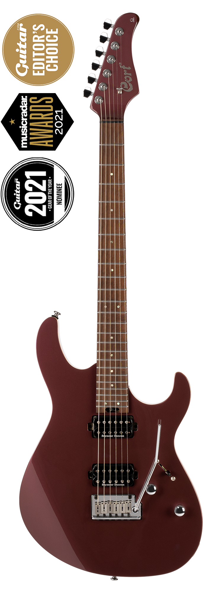
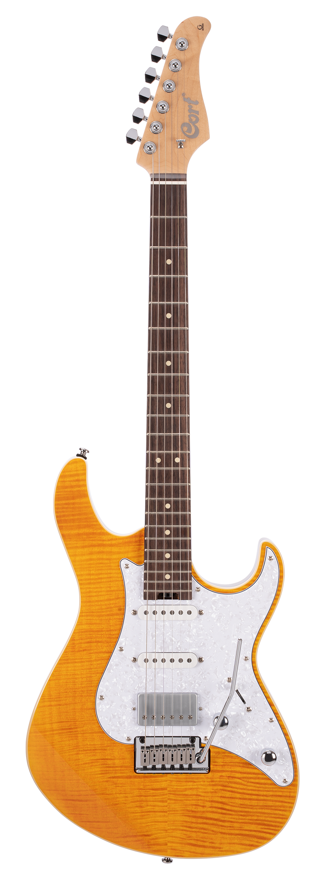
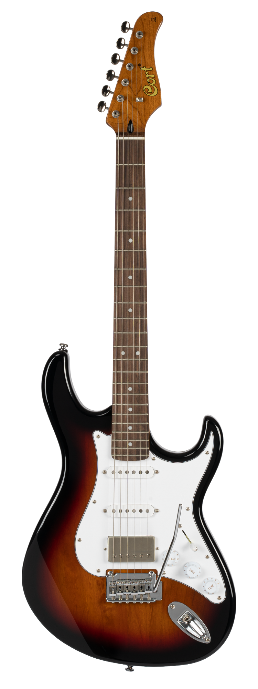
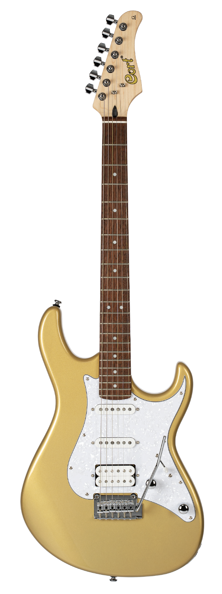
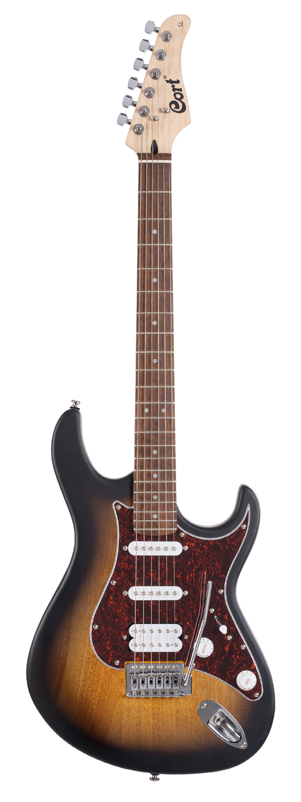

Серія G
Серія G є логічним розвитком того, що приємно називати старомодним.
Це сучасний інструмент, в якому з особливим смаком збережені звичні властивості та естетичність
класичних електрогітар із двостороннім вирізом. Ця колекція пропонує широкий вибір можливостей, що
найкраще задовольняють індивідуальні вимоги різних музикантів.

Натисніть і утримуйте для збільшення
Cort-G300Pro
| Кріплення грифу: | Bolt-On |
| Корпус: | Basswood |
| Топ / верхня дека: | Solid Maple |
| Гриф: | Roasted Maple |
| Накладка грифа: | Roasted Maple (Luminous side dot inlays) Radius: Compound Radius(12"-15.75") |
| Лади: | 24 (Stainless Steel) |
| Мензура: | 25.5" (648㎜) |
| Колкова механіка: | Cort® Staggered Locking |
| Брідж: | Cort® CFA-III Tremolo |
| Електроніка: | 1 Volume, 1 Tone, 5 Way Switch |
| Струни: | D'Addario® EXL120 |
| Звукознімачі: | Seymour Duncan® SH2N & TB4 Humbucker Set |
| Фурнітура: | Chrome |
| Забарвлення: | Vivid Burgundy, Black |
Ціна: 22678 грн

Натисніть і утримуйте для збільшення
Cort-G280 Select
| Кріплення грифу: | Bolt-On |
| Корпус: | Alder |
| Топ / верхня дека: | Flamed Maple |
| Гриф: | Hard Maple |
| Накладка грифа: | Rosewood Radius: Compound Radius(12"-15.75") |
| Лади: | 22 |
| Мензура: | 25.5" (648㎜) |
| Колкова механіка: | Cort® Staggered Locking |
| Брідж: | Cort® CFA-III Tremolo |
| Електроніка: | 1 Volume, 1 Tone, 5 Way Switch |
| Струни: | D'Addario® EXL120 |
| Звукознімачі: | Cort® Voiced Tone VTS63 & VTH77 |
| Фурнітура: | Chrome |
| Забарвлення: | Amber, Trans Black |
Ціна: 16995 грн

Натисніть і утримуйте для збільшення
Cort-G260CS
| Кріплення грифу: | Bolt-On |
| Корпус: | Alder |
| Гриф: | Roasted Maple |
| Накладка грифа: | Pau Ferro Radius: 9.45" (240㎜) |
| Лади: | 22 |
| Мензура: | 25.5" (648㎜) |
| Колкова механіка: | Vintage Style |
| Брідж: | 2 Point Tremolo w/ Steel Bent Saddle |
| Електроніка: | 1 Volume & 2 Tone 5-Way Lever Switch, Vintage Voicing |
| Струни: | D'Addario® EXL120 |
| Звукознімачі: | Voiced Tone H-S-S Pickup Set |
| Фурнітура: | Chrome |
| Забарвлення: | 3 Tone Sunburst, Black, Olympic White |
Ціна: 12540-13035 грн

Натисніть і утримуйте для збільшення
Cort-G250
| Кріплення грифу: | Bolt-On |
| Корпус: | Basswood |
| Ширина верхнього порожка: | 1.65" (42㎜) |
| Гриф: | Hard Maple |
| Накладка грифа: | Jatoba Radius: 9.45" (240㎜)(240㎜) |
| Лади: | 22 |
| Мензура: | 25.5" (648㎜) |
| Колкова механіка: | Die-Cast |
| Брідж: | 2 Point Tremolo w/ Steel Bent Saddle |
| Електроніка: | 1 Volume & 1 Tone(Coil-Tap), 5 Way Switch |
| Струни: | D'Addario® EXL120 |
| Звукознімачі: | Cort® Alnico V H-S-S Set |
| Фурнітура: | Chrome |
| Забарвлення: | Champagne Gold Metallic, Silver Metallic, Tobacco Burst, Black |
Ціна: 8745 грн

Натисніть і утримуйте для збільшення
Cort-G110
| Кріплення грифу: | Bolt-On |
| Корпус: | Poplar |
| Ширина верхнього порожка: | 1 21/32" (42㎜) |
| Гриф: | Hard Maple |
| Накладка грифа: | Jatoba Radius: 9.45" (240㎜) |
| Лади: | 22 |
| Інкрустація накладки грифа: | White Dots |
| Мензура: | 25.5" (648㎜) |
| Колкова механіка: | Die-Cast |
| Брідж: | 6 Point Vintage Tremolo |
| Електроніка: | 1 Vol & 1 Tone, 5 Way Switch |
| Струни: | Coated Strings |
| Звукознімачі: | Cort® Powersound HSS Pickup Set |
| Фурнітура: | Chrome |
| Забарвлення: | Open Pore Sunburst, Open Pore Black Cherry, Open Pore Black |
Ціна: 5 363 грн